CS 180 Project 2: Fun with Filters and Frequencies!
Part 1.1: Convolutions from Scratch
Original Grayscale Image
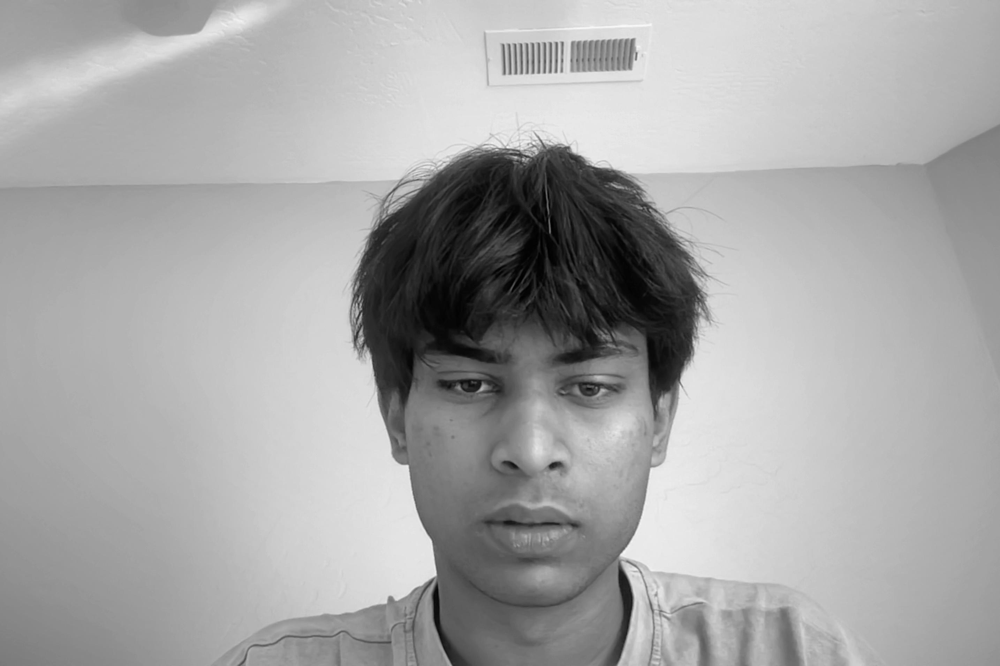
Four-Loop Convolution Implementation
def convolutionfourloops(image, filter):
x, y = np.shape(image)
fx, fy = np.shape(filter)
px = fx // 2
py = fy // 2
padded = np.zeros((x + (2 * px), y + (2 * py)))
padded[px: x + px, py: y + py] = image
out = np.zeros((x, y))
filter = filter[::-1, ::-1]
for i in range(x):
for j in range(y):
dot = 0
for fi in range(fx):
for fj in range(fy):
dot += padded[i + fi][j + fj] * filter[fi][fj]
out[i][j] = dot
return out
Two-Loop Convolution Implementation
def convolutiontwoloops(image, filter):
x, y = np.shape(image)
fx, fy = np.shape(filter)
px = fx // 2
py = fy // 2
padded = np.zeros((x + (2 * px), y + (2 * py)))
padded[px: x + px, py: y + py] = image
out = np.zeros((x, y))
filter = filter[::-1, ::-1]
for i in range(x):
for j in range(y):
dot = np.sum(
filter * padded[i:i + fx, j:j + fy]
)
out[i][j] = dot
return out
9x9 Box Filter
Two-Loop

SciPy

Finite Difference: Dx
Two-Loop

SciPy

Finite Difference: Dy
Four-Loop

Two-Loop

Runtime Comparison
The four loop implementation was the slowest since the convolution operation was applied elementwise using two loops.
The two loop implementation was faster due to using NumPy's optimized convolution.
The scipy implementation was the fastest.
Boundary Handling
I handled boundaries by implementing same padding in which zero values were used around the original image.
The padding was of size filter // 2 to maintain the same size of the image after convolution.
Part 1.2: Finite Difference Operator
Partial Derivative in X
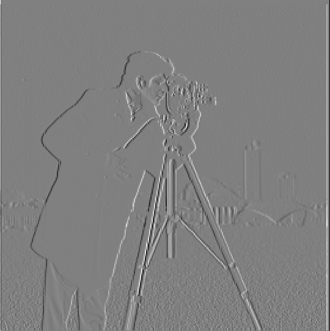
Partial Derivative in Y
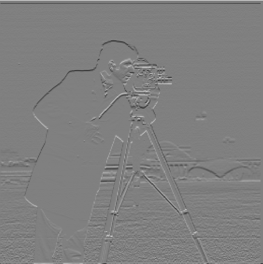
Gradient Magnitude
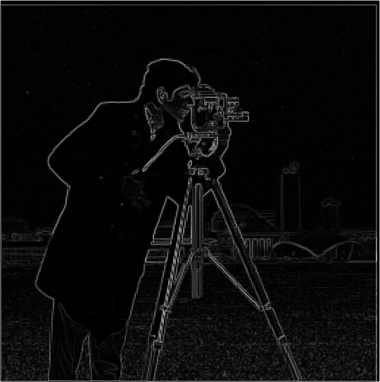
Binarized Edge Image
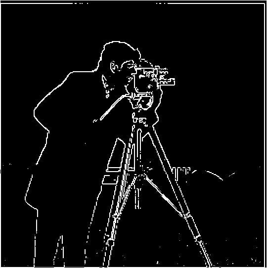
Threshold Choice
The 90th percentile pixel value was ~0.17 and I think it is fair to assume that only less than 10 percent of
pixels are edges so I started with a threshold of 0.2 but there was still some dots on the bottom and throughout the image
so I moved up to 0.25 which removed some more of the noise without reomving any edges with some faint noise on the bottom still
and 0.3 preserved all the major edges with minimal noise so I kept that one.
Part 1.3: Derivative of Gaussian (DoG) Filter
Gaussian Smoothed Image
Gradient Magnitude After Gaussian Smoothing
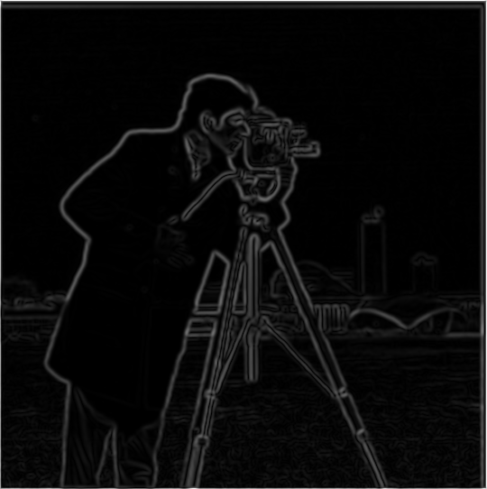
Binarized Edges After Gaussian Smoothing
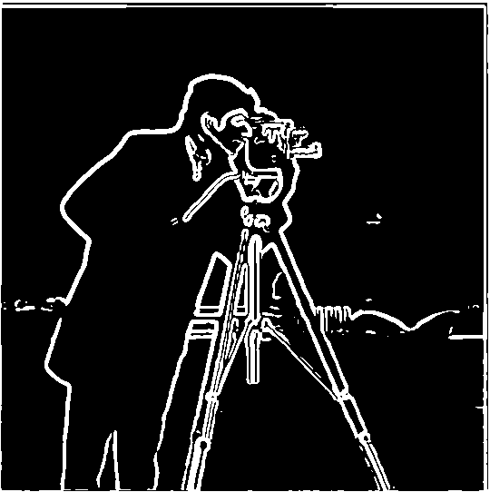
After smoothing the image using a Gaussian filter, the binarized edge image is less noisy and the edges are thicker. The main edges of the cameraman and throughout the image are easier to see, while some finer edges and details are gone due to the smoothing.
Derivative of Gaussian Filters
DoG X Filter
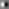
DoG Y Filter
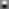
Gradient Magnitude Using DoG Filters
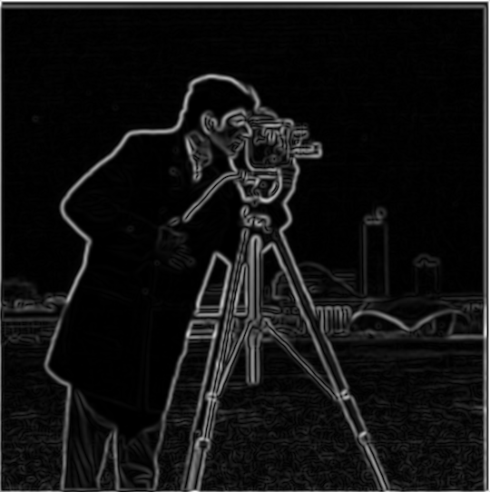
Binarized Edges Using DoG Filters
Comparison
Applying the derivative of Gaussian filters directly gives the same result as first smoothing the image and then applying the finite difference filters. The images agree of 99% of pixels.
Part 2.1: Image Sharpening
Unsharp Masking
First, I applied the Gaussian filter from part 1.3 onto the image which blurred the image and removed some high frequency details. I then subtracted the blurred image from the original which gave me the high frequency details of the original image.
Finally, to sharpen the image I added a scaled version of the high frequency image back to the original which enhanced details.
Taj Mahal
Blurred
High Frequency
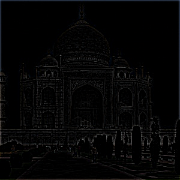
Sharpened

Effect of Sharpening Amount
As alpha increases, how much the high frequency component of the image contributes also increases. This is apparent in these images because as alpha increases the images become sharper and the
finer details become more apparent.
Additional Image
Blurred
High Frequency
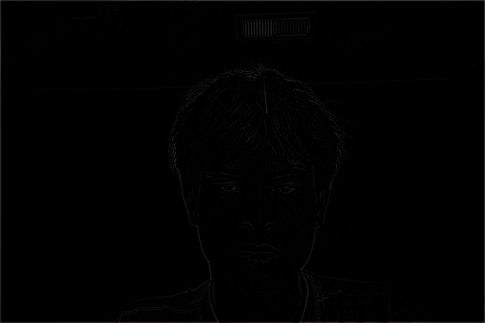
Sharpened
Blur and Re-Sharpen Experiment
Original Sharp Image
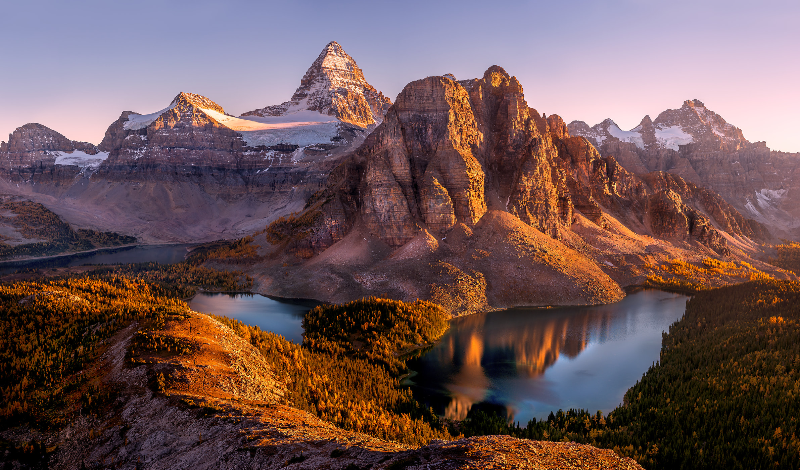
Artificially Blurred
Re-Sharpened
Blurring the image using the Gaussian filter removes alot of the finer high frequency detail. Applying the unsharp mask to this blurred image sharpens it somewhat but still does not restore the original image completely
because some information was lost during blurring which cannot be inferred from the blurred image.
Part 2.2: Hybrid Images
Derek and Nutmeg
In the hybrid image below, Derek is the high frequency image and his former cat Nutmeg is the
low frequency image. To generate the low frequency image of Nutmeg, I convolved the image
with a Gaussian filter in the same way that I did in part 1.3. To generate the high frequency image of Derek,
I first convolved the image with a Gaussian filter and then subtracted that blurred version from the original
to get the high frequencies. To build the hybrid image, I added the low frequency version of Nutmeg
and the high frequency version of Derek.
For this hybrid image, the high frequency sigma value used to construct the Gaussian filter was 8 while the
low frequency sigma value was 4. I chose these values because they resulted in the clearest hybrid image in which
high frequency details of Derek were visible up close while low frequency details were visible farther away.
For the high frequency sigma value I chose a value which was high enough that mostly high frequency details were
extracted while not being too selective and for the low frequency sigma value I chose a value that didn't result
in too much detail being blurred away.
Original Images
Derek - High Frequency
Nutmeg - Low Frequency
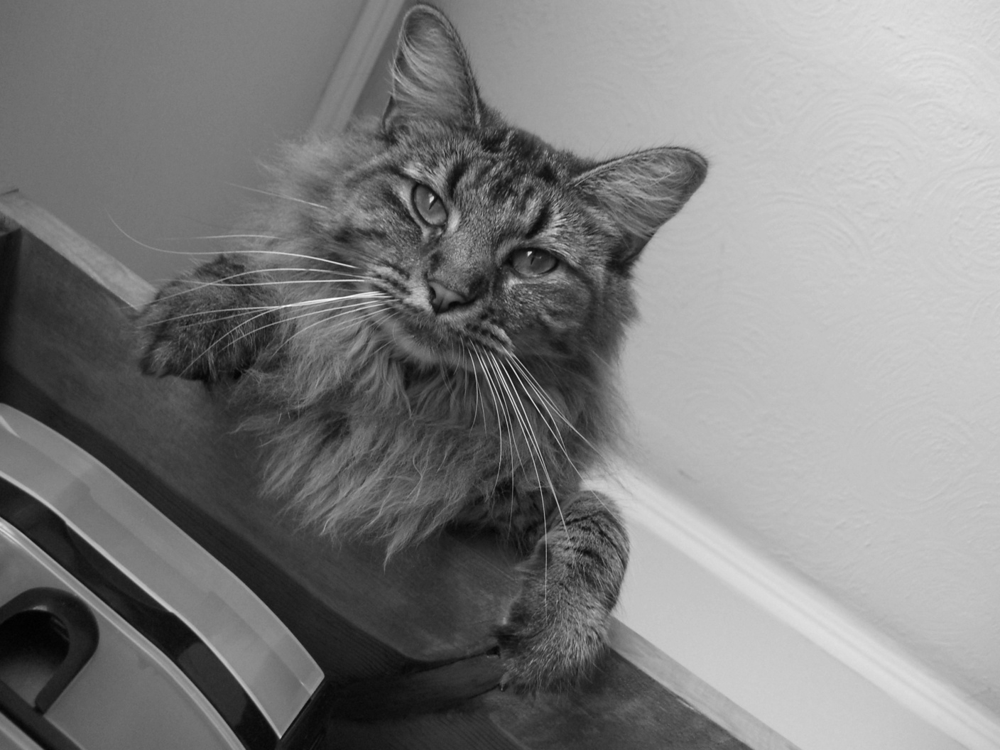
Aligned Images
Aligned Derek
Aligned Nutmeg
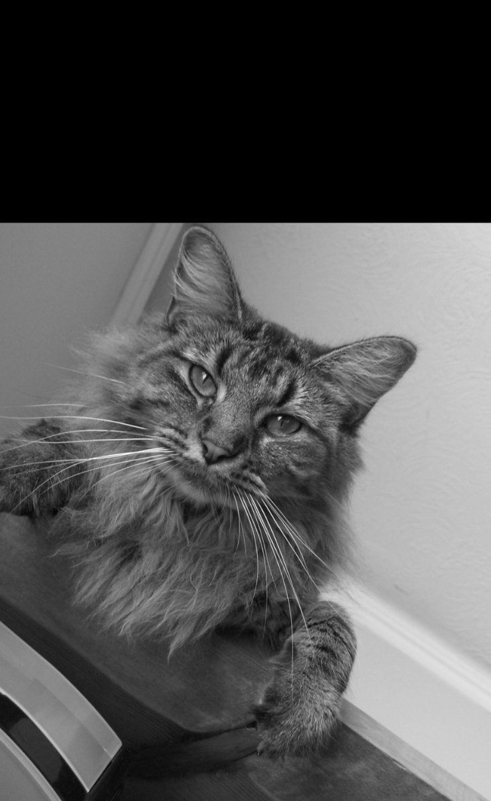
Fourier Transforms of Aligned Images
Derek Fourier Transform
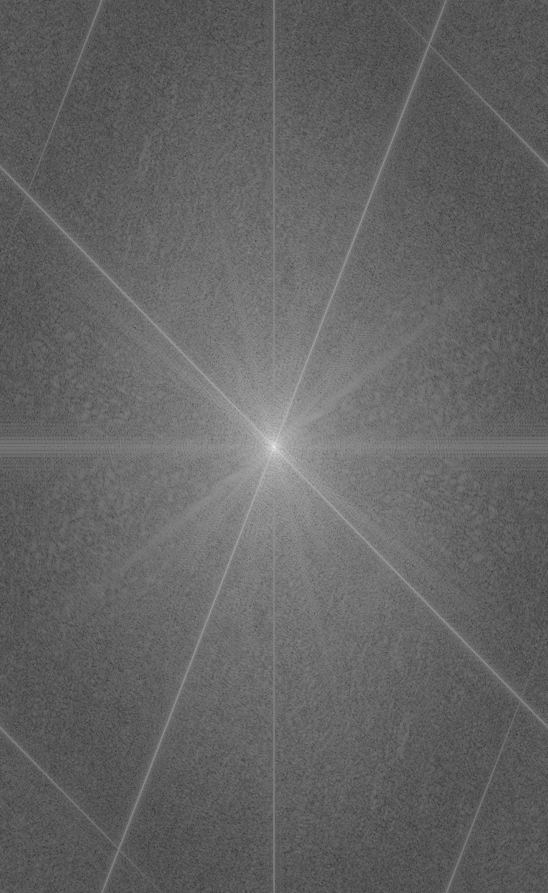
Nutmeg Fourier Transform
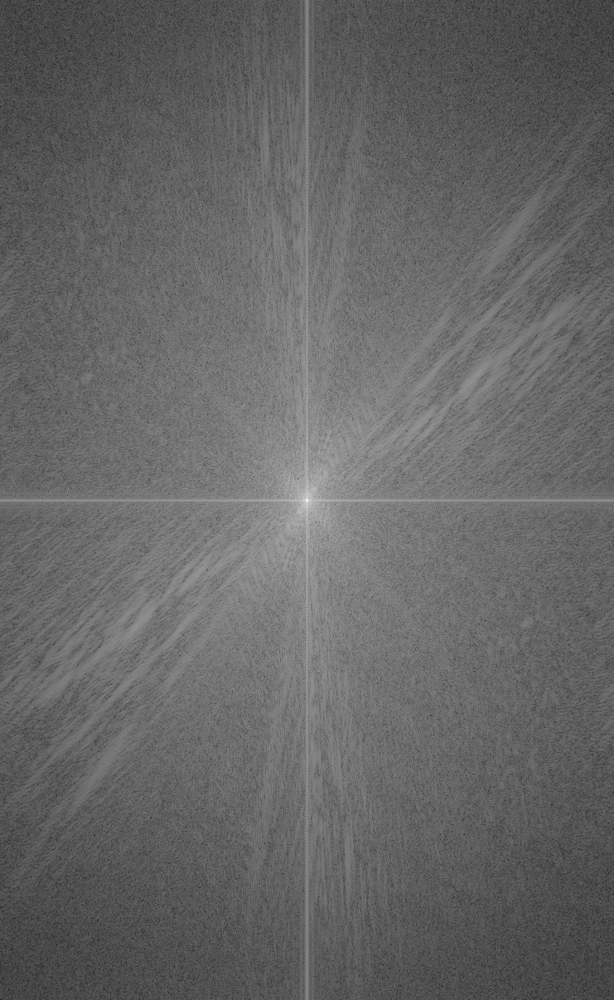
Filtered Images
High Frequency Derek
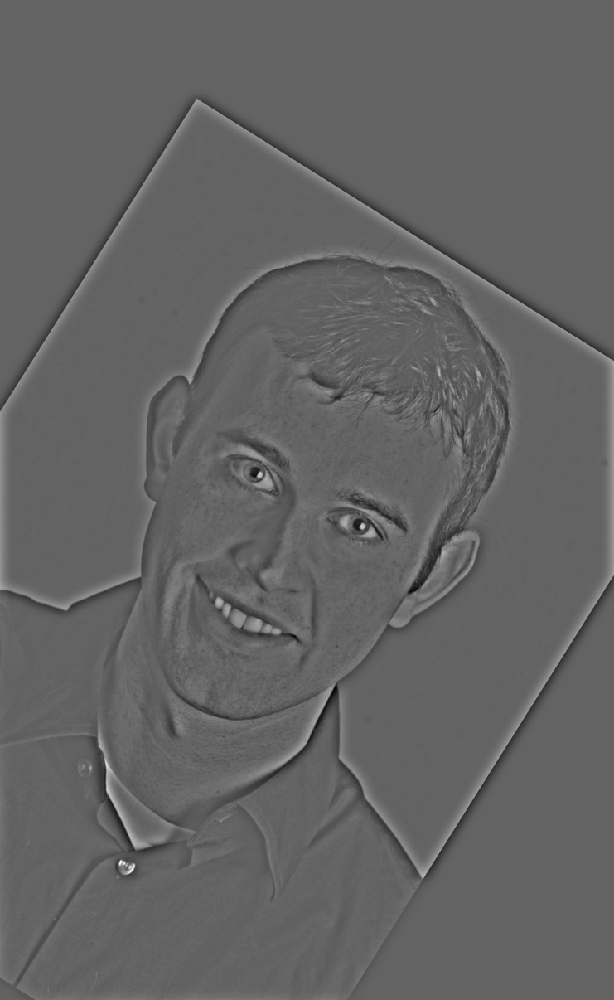
Low Frequency Nutmeg
Fourier Transforms of Filtered Images
High Frequency Fourier Transform
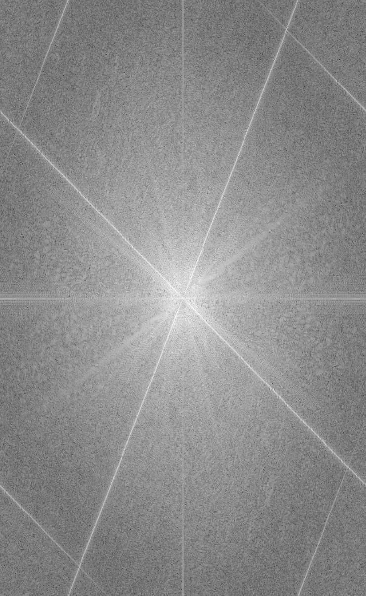
Low Frequency Fourier Transform
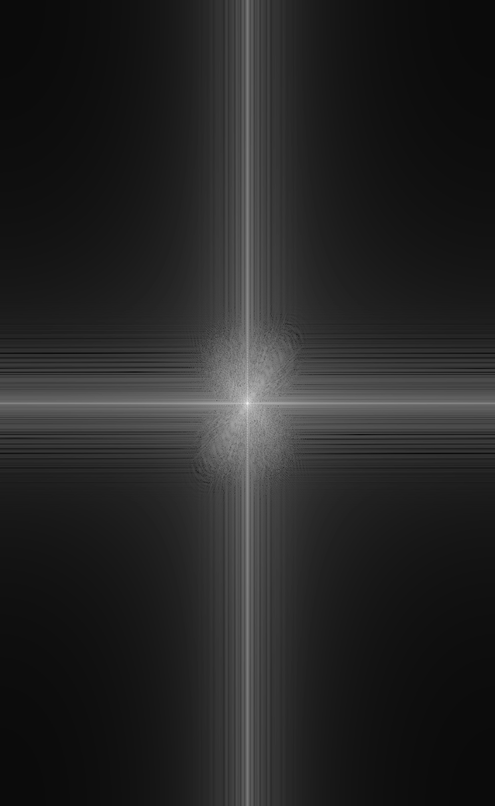
Final Hybrid
Derek and Nutmeg Hybrid
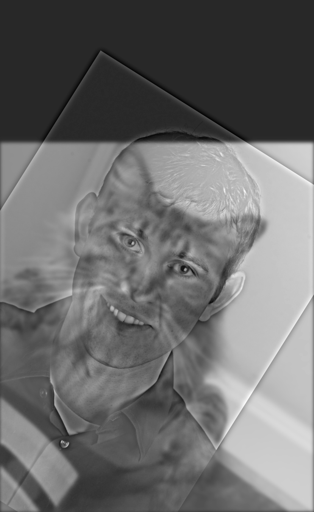
Hybrid Fourier Transform
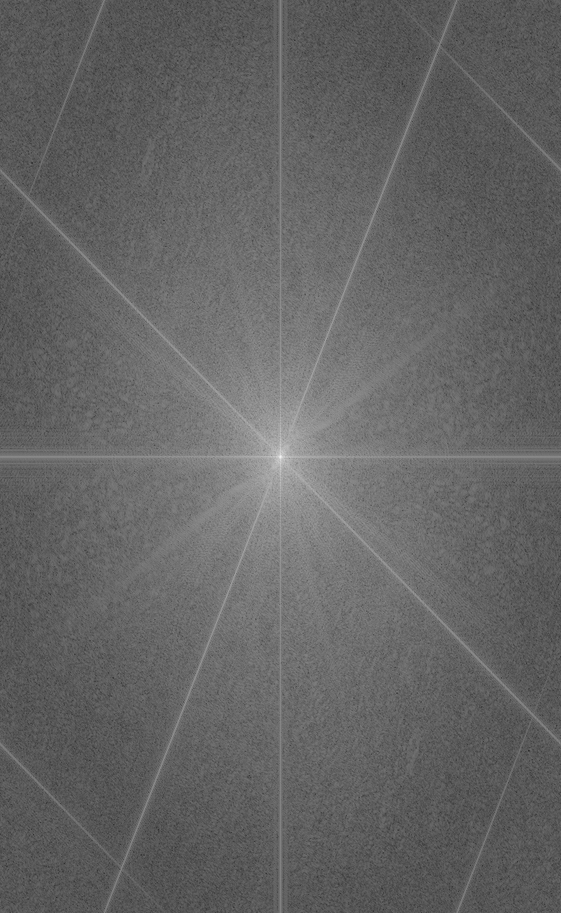
Additional Hybrid: Nirmit and Monkey
This is another hybrid image of Nirmit and a Monkey. The high frequency details of Nirmit are visible up close and
as you move away the lower frequency general structure of the Monkey becomes visible.
Nirmit - High Frequency Input
Monkey - Low Frequency Input
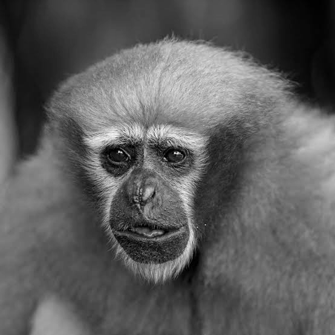
Final Nirmit and Monkey Hybrid
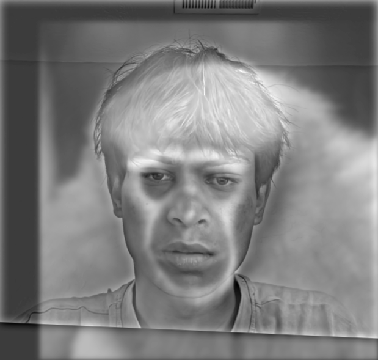
Additional Hybrid: Professor and Goat
This is another hybrid image of the Professor and a Goat. The Professor is the high frequency input in which
you can see the higher frequency details of the professor up close while the goat becomes more apparent as you move
farther away.
Professor - High Frequency Input
Goat - Low Frequency Input
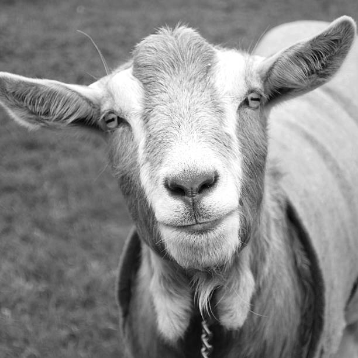
Final Professor and Goat Hybrid
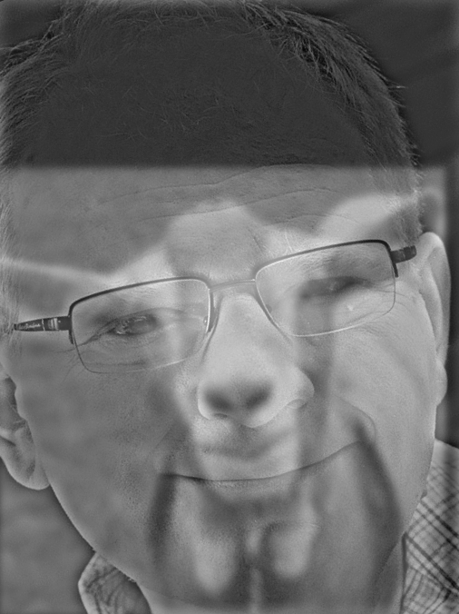
Parts 2.3 and 2.4: Multiresolution Blending
Figure 3.42 Recreation
Additional Blend: Sunset Images
Sunset One
Sunset Two
Final Blend
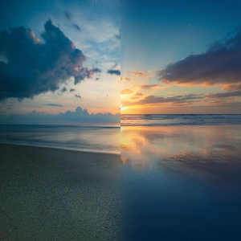
Sunset Blending Process
(d)
(e)
(f)
(g)
(h)
(i)
(k)
(l)
Additional Blend: Moon and Night Background
Moon Image
Background Image
Irregular Mask
Final Blend
What I Learned
The most important thing I learned from this project is how crucial image frequencies are. Isolating different frequencies of an image allows us to manipulate them in
different ways to achieve the effect we want. For example in 2.1, we used higher frequencies to sharpen images because they corresponded to finer details. Then in 2.2,
using the infromation that higher frequencies were more visible closer to the image, we created hybrid images by combining the high frequencies of one image and the low
frequencies of another. Finally, for part 2.3 and 2.4, we blended images by isolating different frequencies of an image and blending each frequency with eachother, allowing
finer details to be blended less while lower frequency details blended more.